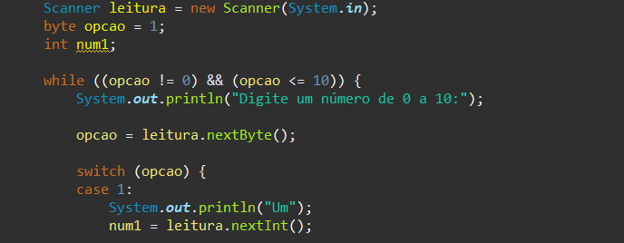
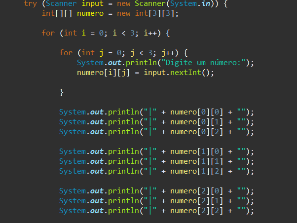
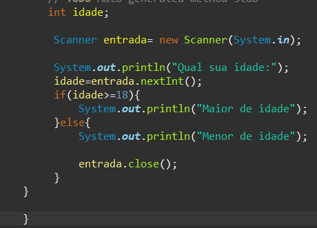
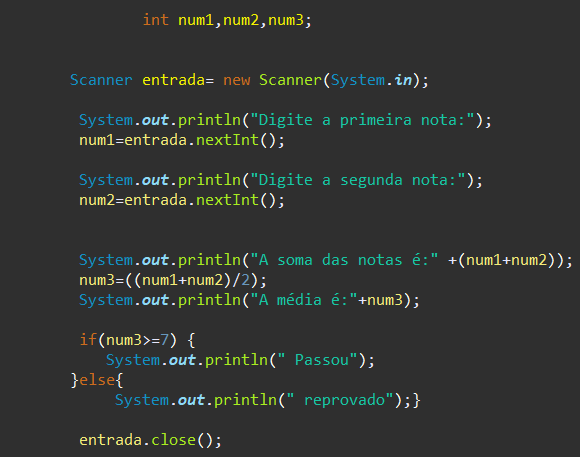
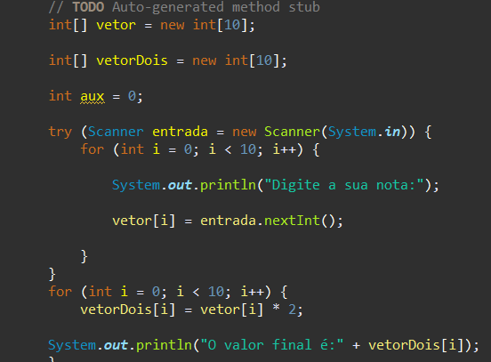

Principais Atividades FPOO
While
A declaração while cria um laço que executa uma rotina especifica enquanto a condição de teste for avaliada como verdadeira. A condição é avaliada antes da execução da rotina.
Matriz
Matrizes são estruturas bidimensionais (tabelas) com m linhas por n colunas muito importantes na matemática, utilizadas por exemplo para a resolução de sistemas de equações e transformações lineares .Uma matriz pode ser representada como uma lista de listas, onde um elemento da lista contém uma linha da matriz, que por sua vez corresponde a uma lista com os elementos da coluna da matriz.
If/else
Quando a condição que estiver dentro do if for verdadeira, ela é executada. Já o else é utilizado para definir o que é executado quando a condição analisada pelo if for falsa.
Int
A variável numero é do tipo inteiro e, por isso, só poderá receber valores desse tipo.
Vetor
Vetores são estruturas de dados que armazenam usualmente uma quantidade fixa de dados de um certo tipo